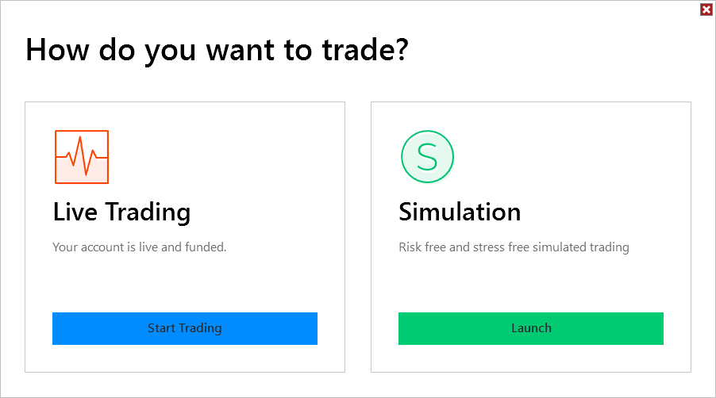

|
<< Click to Display Table of Contents >> Trading Mode |


|
Trading Mode
|
<< Click to Display Table of Contents >> Trading Mode |
|
After Log In you will be presented with the Trading Mode window.

The Live Trading section will display the current state of your live account. If your account is live and funded, you can select Start Trading to connect.
The Simulation section will display the current start of your simulation account. If your account is active your can select Launch to connect.
Note: If Multi-provider is enabled the Trading Mode screen will be skipped. You can then select what to connect to under the Connections menu of the Control Center. |